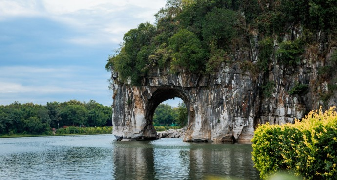
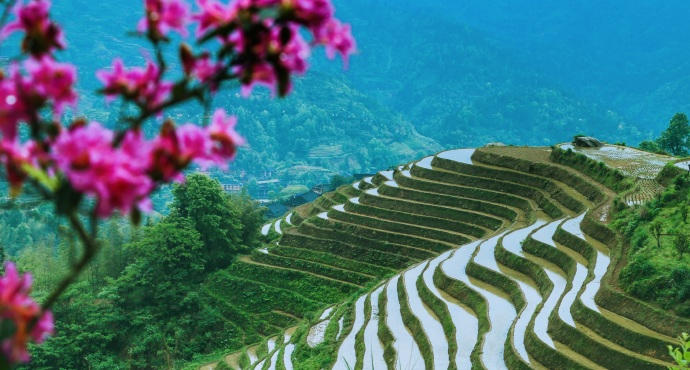
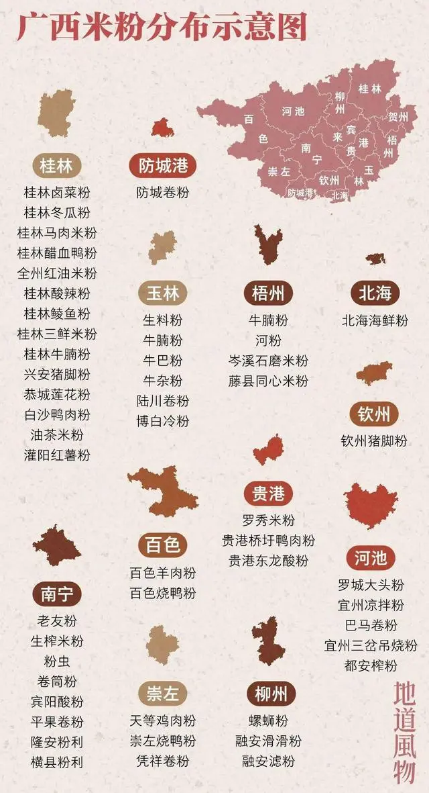
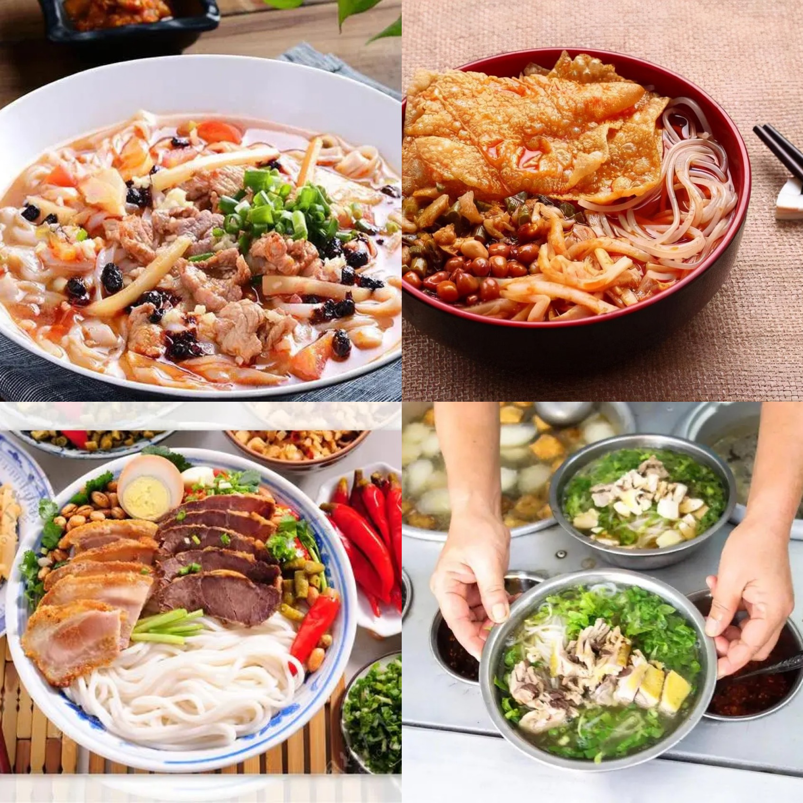
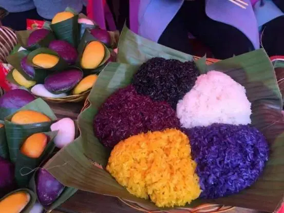

风景名胜
象山景区：以象鼻山为主体，位于市内桃花江注入漓江处，因其山形酷似一头巨象临江汲水而得名,被看做桂林山水代表。象山公园山孤拔陡峭，
岩石古苍，崖间藤萝攀援，山榕依附。
北海银滩：北海必游之地，滩面宽阔，沙质细柔洁白，被称为中国第一滩。每年约有9个多月可下水，在潮水刚退去的海滩漫步，甚至脚印也不会留下，
只有细腻的白砂在阳光下泛着银光。
龙脊梯田：桂林地区一个规模极为宏大的梯田群，来龙脊梯田，多以徒步看景拍照为主。还可尝尝当地的农家菜，体验少数民族风情。
梯田中散落着瑶族、壮族人的寨子，每年红瑶族的“晒衣节”， 届时家家户户都会将花衣花裙拿出来晾晒，绚丽夺目。
德天瀑布：横跨中国、越南两个国家，是亚洲第一、世界第四大跨国瀑布。瀑布气势磅礴、巍峨壮观，与紧邻的越南板约瀑布相连，
神奇而美妙。70米高落差飞泻而下，一波三折，形成三级瀑布，是原生态的自然景观。

特色美食
论米粉的丰富程度，广西米粉太卷了，只要能称得上食材的，都可以放入米粉中。
南宁老友粉：老友粉是广西南宁最受欢迎的独特地方风味小吃之一，酸、辣、咸、香兼备，据说食之具有驱风散寒、通窍醒味之功效。
桂林米粉：桂林的山水不仅甲天下，桂林的米粉也别具独特风味， 其特点是洁白、细嫩、圆滑、爽口、柔韧等，其主要以湿粉、叉烧、卤水为主材的菜肴，
可根据个人口味加入酸笋，酸豆角，花生米等配菜。
柳州螺蛳粉：柳州的特色美食，螺肉做汤底，红油明亮香辣，再配上新鲜的米粉和特色酸笋，吃起来又香又鲜。柳州当地的螺蛳粉可以加鹌鹑蛋、鸡爪、
猪手、豆干等等，有机会一定要亲自尝一尝。
五色糯米饭：是南宁壮族的传统风味小吃，用植物的汁水提取的色素，放入糯米饭中染制而成的，纯天然制作的五色糯米饭，不仅好看而且好吃。
食法多样，可以煮着吃，也可以蒸着吃、 炸着吃，还可以用来做成汤圆、糯米鸡以及各种甜食等。
龟苓膏：主要是由鹰嘴龟和土茯苓熬制而成，两者均有清热解毒、滋阴补肾、降火除燥、祛湿排毒的功效。吃起来口感非常像果冻状，入口即化，味道甘甜。
适合一年四季食用，但最受欢迎的还是在炎热的夏季吃，清热去火又美容养颜。
